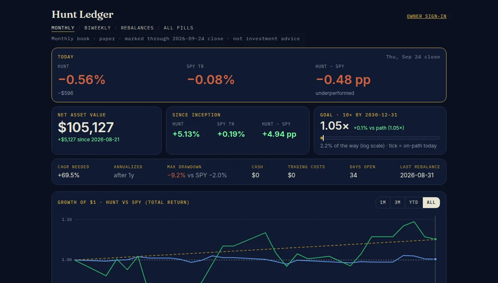
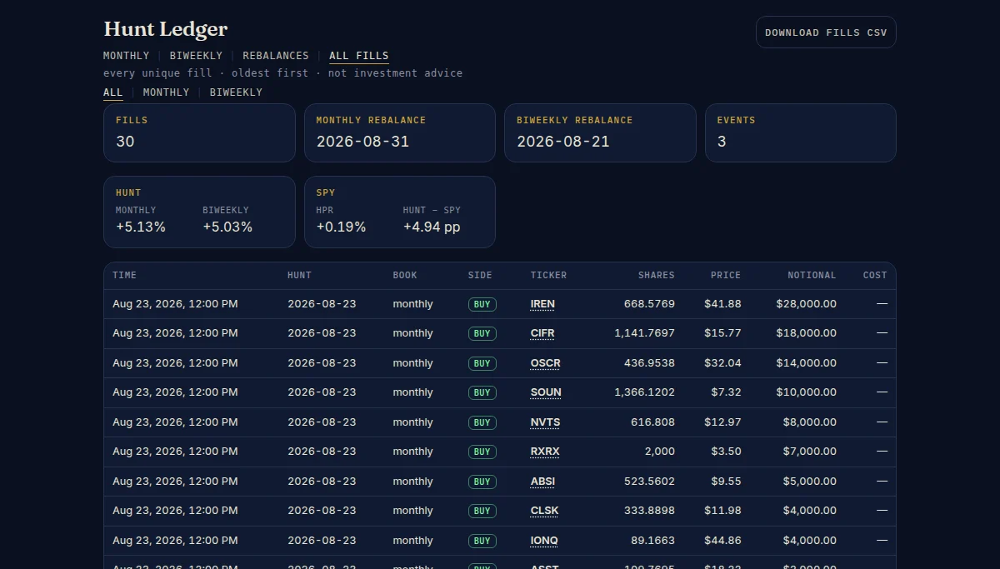

Research tool · paper trading · not investment advice
Hunt Ledger
A paper-trading book for a monthly research exercise: which small companies have an arithmetically possible path to ten times their value by 2030, and what would have to be true for it to happen?
Not investment advice. This is a paper-trading ledger: no real money is invested, and nothing on it is a recommendation to buy, sell or hold any security. The names are speculative small-capitalisation stocks that can lose most or all of their value; the scenarios are thought experiments, not forecasts. I am not a licensed investment adviser, this is not a solicitation, and past paper performance says nothing about future results. It is published as a teaching artefact about research discipline. Do your own research and consult a licensed professional before investing.
§ 01 — The process
The bridge
A name has to earn its weight
Every candidate has to survive a bridge before it gets a weight: revenue to margins, margins to cash and capex, cash to financing and dilution, a deliberately compressed terminal multiple, and only then an equity value per share, in a base and a bull case, compared to the 10× price in plain words (“about 1.1×”, never “will 10×”). Each name carries one sentence that would falsify the thesis.
Names are ranked on the quality of that path, never on how loud they are online. Crowd attention is measured, as a signal of heat, and then explicitly not used as a reason. Most candidates fail the bridge, which is the point. The first month’s honest conclusion was that nobody in the set was a clean 10×.
The ledger
A book that cannot cheat
The book starts with a notional $100,000 on August 21, 2026 and a matching $100,000 buy of SPY the same day. Each month it imports one CSV of names and integer weights that sum to one hundred, sells what dropped off, rebalances the rest to target, and records every fill at verified daily closes. Prices are never invented: a missing quote shows as unknown.
The equity curve is indexed at 1.00 against the benchmark, target and actual sector pies show the drift, and the history page is the trade blotter. Marks persist in a database, so the record survives refreshes and deploys.
§ 02 — Screens

